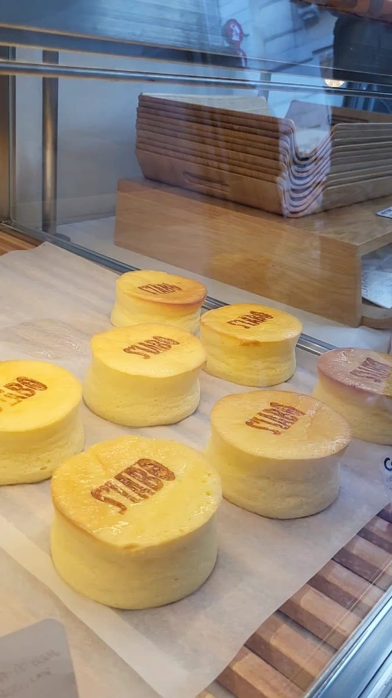
Il cult
Cotton Cheesecake
La torta al formaggio «di cotone» giapponese: soffice, tremolante, leggerissima. La nostra firma.
il laboratorio dolce di Chinatown
Pasticceria francese, pane al latte giapponese e sapori d'Oriente in un unico laboratorio virale. Melon pan, cotton cheesecake, mochi, matcha e le torte kawaii — un vero spettacolo per gli occhi, prima ancora che per il palato.
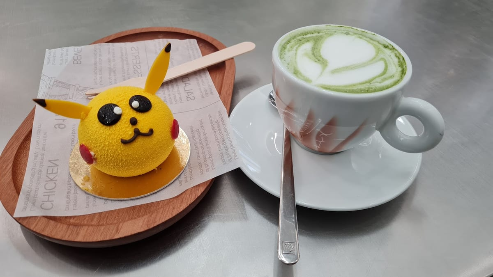
S'Lab è il «sweet laboratory» nato in Via Paolo Sarpi: un banco che mescola la pâtisserie francese, il soffice pane al latte giapponese e i sapori dell'Oriente in dolci che a Milano non si erano ancora visti.
Si entra, si prende un vassoio e una pinza, e si sceglie direttamente dalle vetrine. Gusti particolari, estetica curatissima e tanta fila fuori: qui il bello si guarda e si mangia.
Un assortimento curato, non eccessivo: ogni giorno la vetrina è un piccolo spettacolo. Ecco cosa cercare.

La torta al formaggio «di cotone» giapponese: soffice, tremolante, leggerissima. La nostra firma.
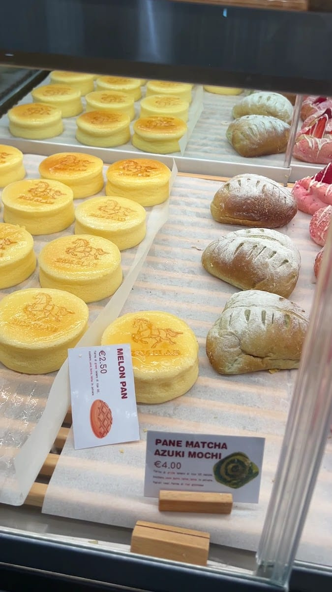
Pane dolce giapponese, croccante sopra e morbido dentro.
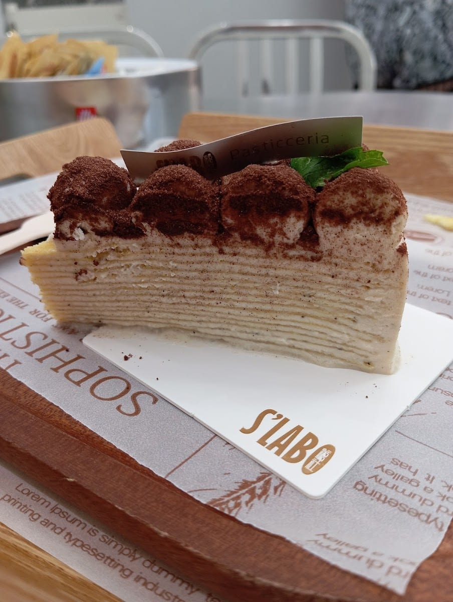
Decine di crêpe sottilissime, crema e tè verde.
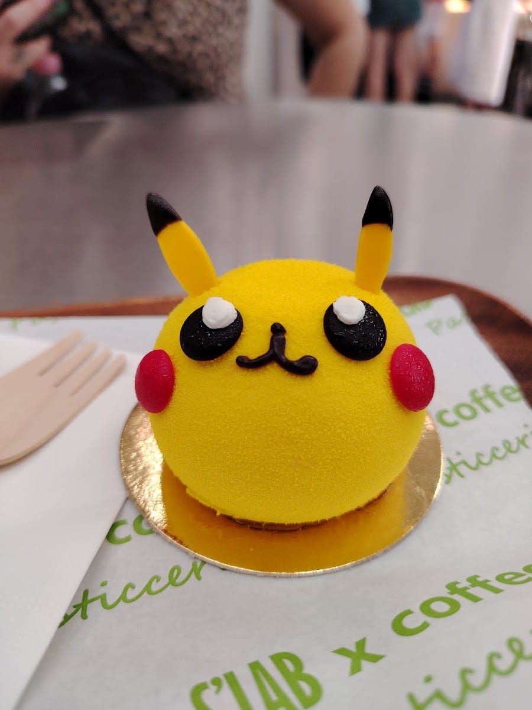
Tortini a forma di Pikachu al passion fruit: troppo belli per mangiarli. (Ma li mangi.)
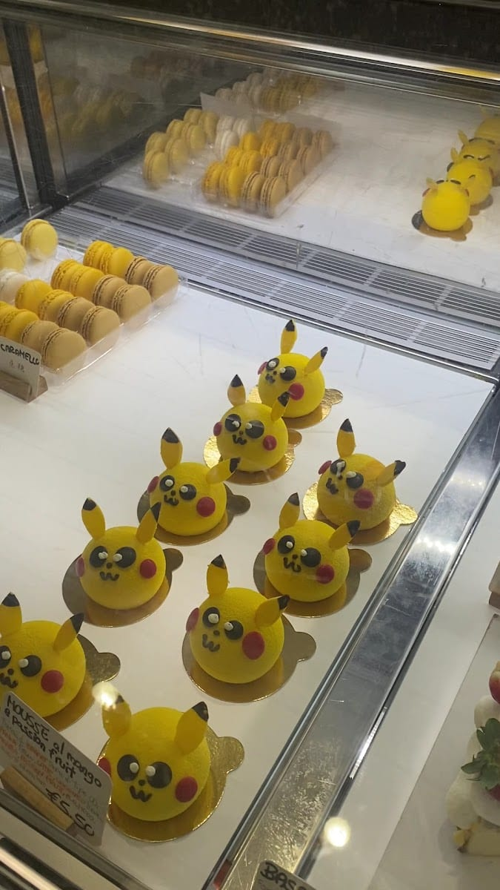
I classici d'Oriente: mochi morbidi e dorayaki al cioccolato.
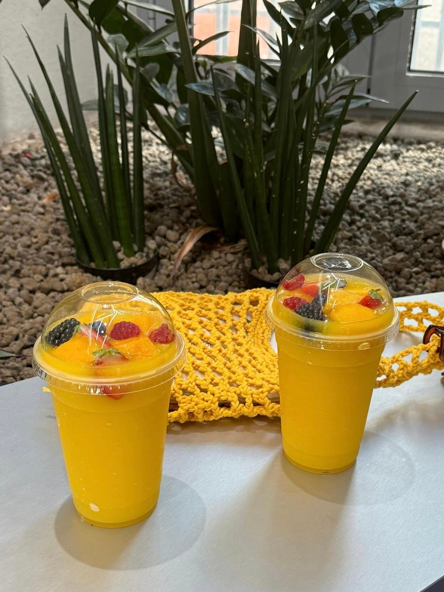
Boba, passion fruit e taro milk tea per accompagnare il dolce.
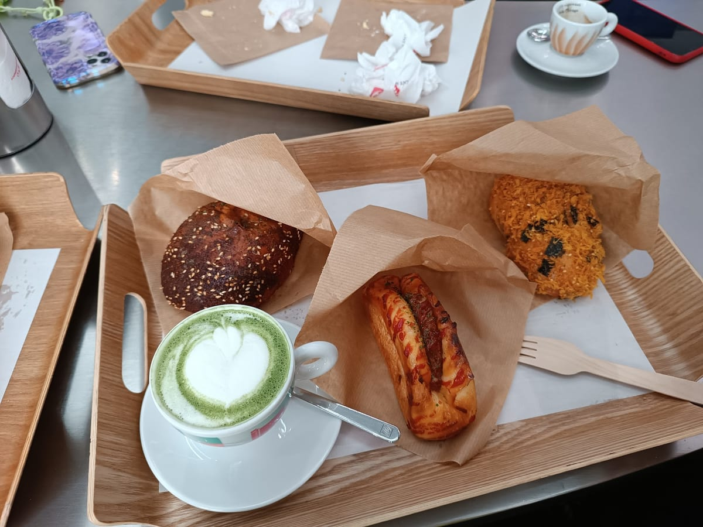
Caldo o freddo, con l'arte del latte a regola.
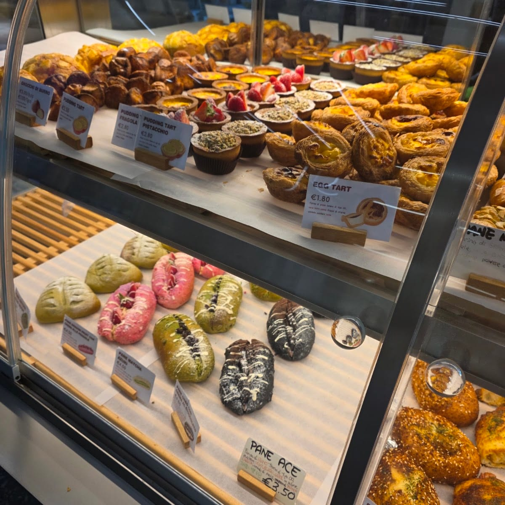
Il lato francese-portoghese: cronut, pastel de nata, dolci del giorno.
La vetrina cambia spesso: quello che trovi dipende dalla giornata (e da quanto sono stati veloci gli altri).
«Torta al formaggio di cotone»: soffice come una nuvola, tremola appena la tocchi. Il dolce-simbolo di S'Lab, quello che tutti fotografano e poi finiscono in due morsi.
Dal tortino Pikachu al passion fruit alle mousse più colorate: pasticceria che sembra un cartone animato, ma con dentro tecnica francese e ingredienti veri.
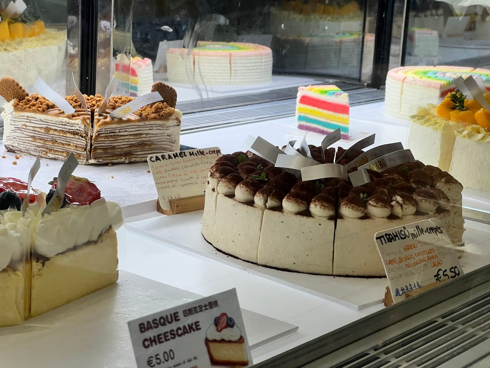
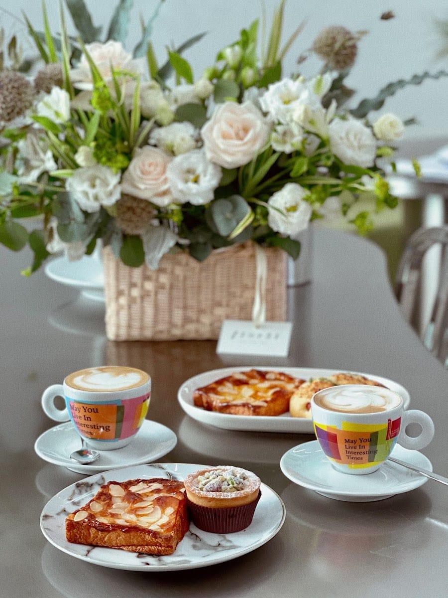
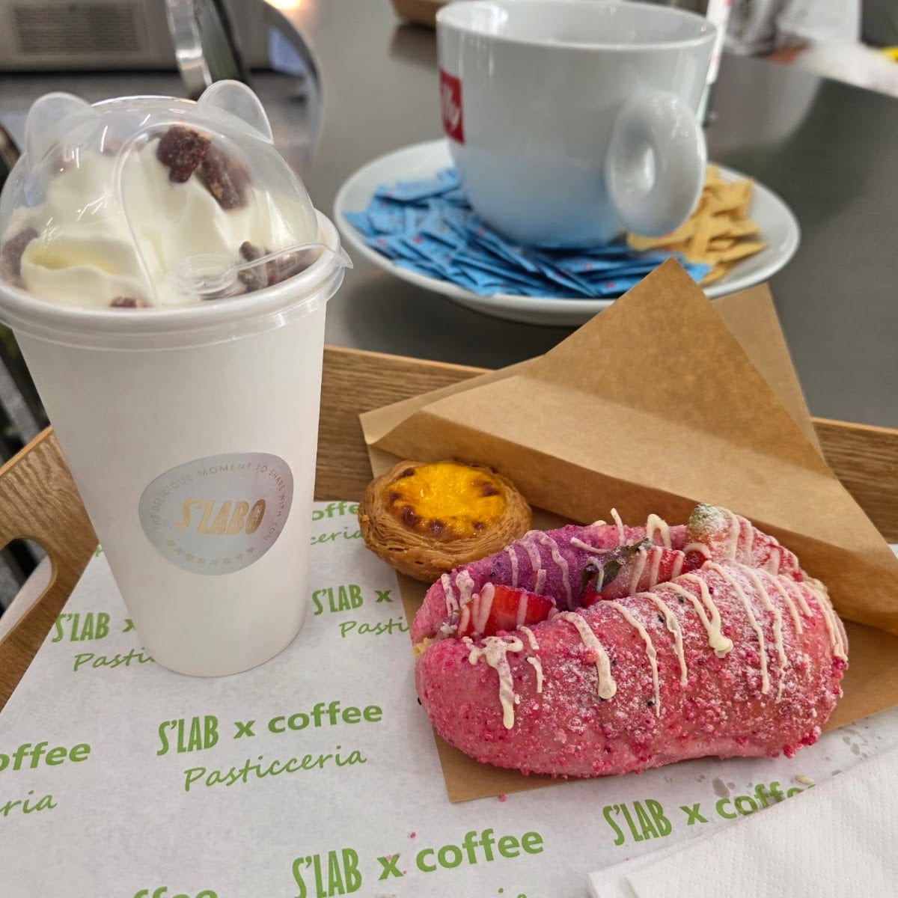
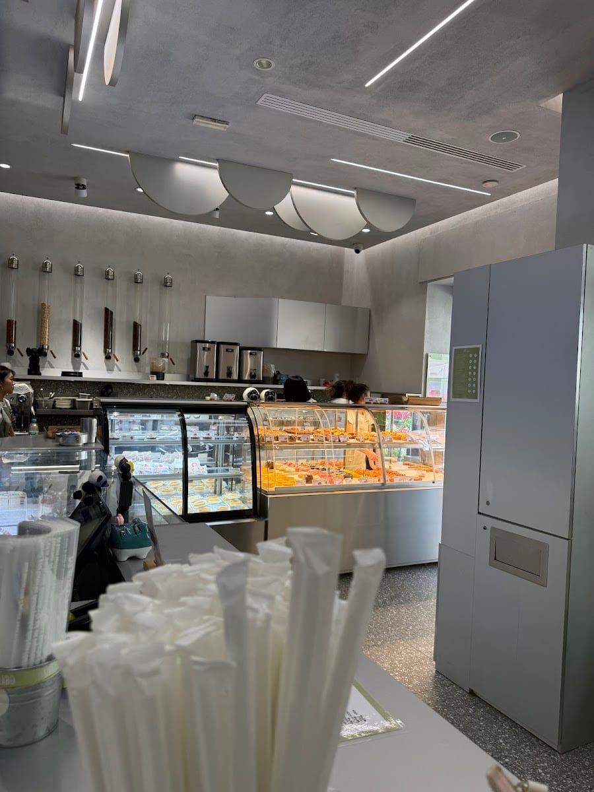
A mio parere la miglior pasticceria di Chinatown! Nel tempo ho provato diversi prodotti: melonpan, mochi, bubble tea, pane… sempre una garanzia.
Viviana · ★★★★★
Pasticceria tipica orientale, gusti particolari e dolci poco conosciuti qui in Italia. Menzione d'onore per le loro torte, squisite ed esteticamente bellissime.
Andrea Sacchetti · ★★★★★
Il tortino a forma di Pikachu, una cotton cheesecake, un cinnamon roll… ogni volta è stato un viaggio sublime, un'esperienza di sapori e profumi indimenticabile.
Bianca Molari · ★★★★★
Tutto quello che hanno in vetrina è SUPER invitante! Il Dorayaki al cioccolato era spettacolare, morbidissimo. Avrei preso uno di tutto.
Alessio Zuccotti · ★★★★★
Sono rimasta folgorata dalla vetrina, un vero spettacolo per gli occhi, e dopo aver assaggiato è stato uno spettacolo anche per le papille gustative!
Erika · ★★★★★
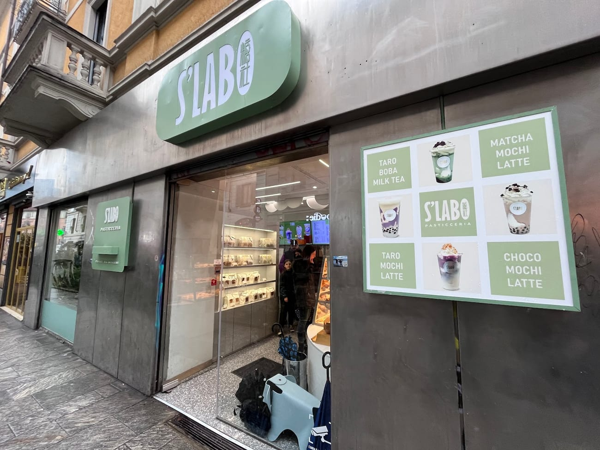
In Via Paolo Sarpi 1, nel cuore di Chinatown a Milano, all'inizio dell'isola pedonale.
Siamo un laboratorio di pasticceria asiatica: uniamo pâtisserie francese, pane al latte giapponese e sapori cinesi. Melon pan, cotton cheesecake, mochi, dorayaki, mille-crêpe al matcha, bubble tea e le torte kawaii.
Tutti i giorni, dalle 9:00 alle 19:30.
No, è self-service: si prende un vassoio e una pinza e si sceglie dalle vetrine. Ci sono alcuni posti a sedere, ma il locale è piccolo e molto frequentato — nelle belle giornate spesso c'è coda.